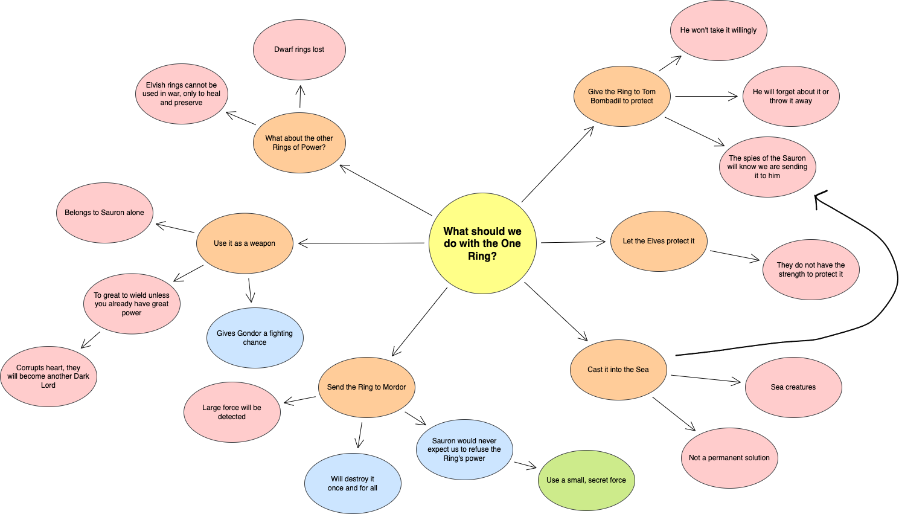

Attendance
Following are a list of the main attendees, marked present or uninvited
- Elrond: Present (King of the Elves.)
- Aragorn: Present (Heir to the throne of Gondor.)
- Boromir: Present (Son of the Steward of Gondor.)
- Gandalf the Grey: Present (One of Five Wizards to roam the world.)
- Legolas: Present (Representative of the Woodland Elves.)
- Gimli: Present (Representative of Erebor.)
- Frodo Baggins: Present (Hobbit who delivered the Ring to Rivendell.)
- Bilbo Baggins: Present (Former Ring Holder.)
- Samwise Gamgee, Meriadoc Brandybuck, Peregrin Took: Uninvited but present (Accomplices of Frodo's.)
Agenda
- Confirm the veracity of the ring presented as The One Ring.
- Discuss the fate of The One Ring.
- Assign members present to the job at hand.
Carryover from last meeting
This is the first convening of the Council of Elrond. There were no previous meetings where tasks were carried over.
Discussion of Agenda Items
- Gandalf narrated his experience with the Ring and fire, and uttered the black speech inscribed on The Ring, to the displeasure of Elrond. This dispelled doubts of its veracity.
- The Ring was decided to be destroyed, as it would corrupt all those who used it. If one was uncorruptable, it was agreed that the Nazgul would hunt them down. Thus, it needs to be destroyed in the heart of Mount Doom.
- Bilbo proposed that he take the Ring, as did various others. However, internal politics between races led to no unanimous answer. Frodo suggested that he take the Ring, and many pledged their allegiance to him.
- Various eavesdropping Hobbits (listed in the attendance) appeared out of the shadows, decided that they too would join the Fellowship formed.
- Fellowship consists of Frodo, Sam, Merry, Pippin, Gandalf, Aragorn, Legolas, Gimli, Boromir.
General post-meeting concerns
There appears to be friction between Legolas and Gimli: both are working in favor of opposing factions of Middle Earth.
Boromir may be a threat to the company: he seems determined to obtain the Ring for Gondor, rather than working towards destroying it.

